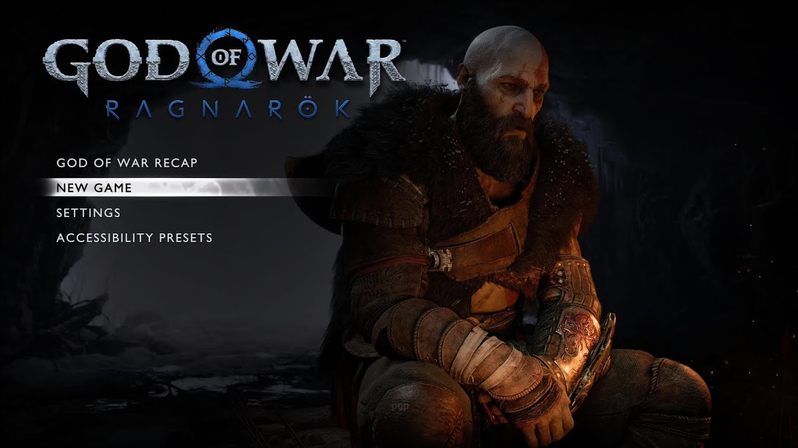
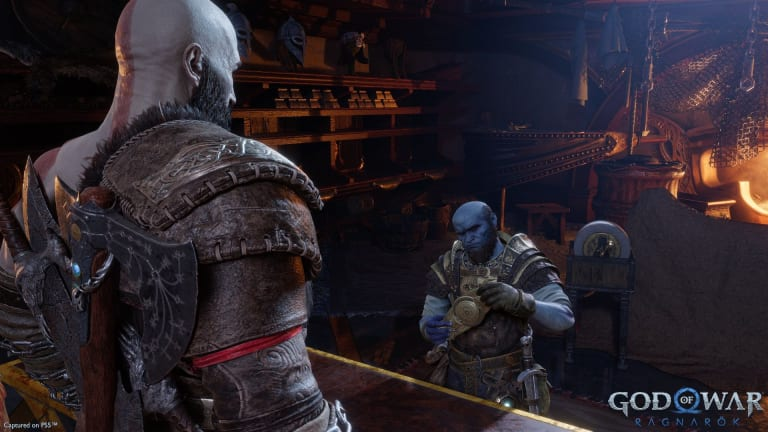
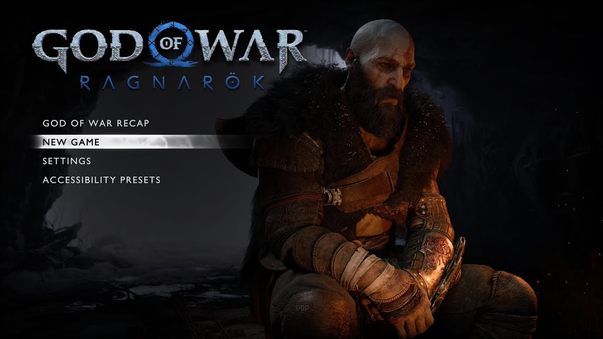
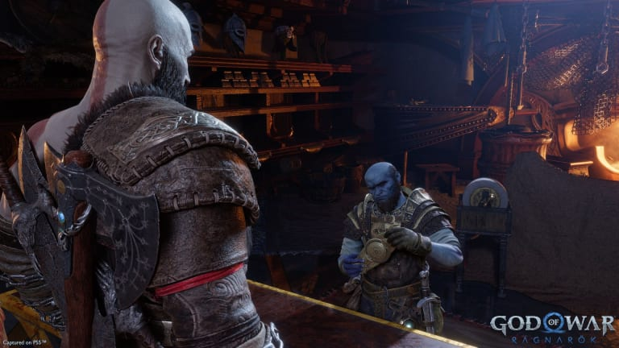

God Of War: Ragnarok
Información del juego
God of War Ragnarök es un videojuego de acción y aventura hack and slash en tercera persona desarrollado por Santa Monica Studio y publicado por
Sony Interactive Entertainment (SIE). Se lanzó en todo el mundo el 9 de noviembre de 2022 para PlayStation 4 y PlayStation 5, lo que marca el primer
lanzamiento intergeneracional de la serie. Es la novena entrega de la saga de God of War, la novena cronológicamente y la secuela de God of War de 2018.
Basado libremente en la mitología nórdica, el juego se desarrolla en la antigua Escandinavia y presenta al protagonista de la serie Kratos y su hijo adolescente
Atreus. Concluyendo la era nórdica de la serie, el juego cubre el Ragnarök, el evento escatológico que es central en la mitología nórdica y se predijo que
sucedería en el juego anterior después de que Kratos matara al dios Æsir Baldur.
La jugabilidad es similar a la entrega anterior de 2018. Presenta combate basado en combos, así como elementos de rompecabezas y juegos de rol. La jugabilidad
se ha renovado con respecto al juego anterior: además de las armas principales de Kratos, un hacha de batalla mágica y sus espadas de doble cadena, también adquiere
una lanza mágica y su escudo se ha vuelto más versátil, con diferentes tipos de escudos que tienen diferentes habilidades ofensivas y defensivas. Su hijo Atreus, así
como algunos otros personajes, brindan asistencia en el combate y pueden controlarse pasivamente.
En esta edición Atreus ha perfeccionado sus habilidades de arquería para realizar nuevos y poderosos ataques con el Arco de Garra y ha desarrollado nuevas habilidades de
invocación rúnica, lo que lo convierte en un compañero confiable para el combate.
Cambia entre la resolución 4K completa a 30 fotogramas por segundo o la resolución dinámica escalada en 4K a 60 fotogramas por segundo.* Disfruta de los hermosos
mundos que por los que viajas, que cobran vida gracias a una impresionante dirección de arte y sorprendentes detalles. Contempla la mejora de los reflejos, la iluminación
y las sombras, así como el aumento de los detalles geométricos y la mejora de la nieve deformable.
Reseñas
IGN
Obra maestra
"God of War Ragnarok es un logro todopoderoso y crea un nuevo nivel que hace que muchos de sus pares parezcan mortales en comparación."
"Un espectáculo apasionante para contemplar y aún más emocionante para tomar las riendas, God of War Ragnarok combina acción y aventura
para crear una nueva e inolvidable saga nórdica. Escritura impecable, actuaciones perfectas, acción espectacular: es una obra de arte
completa de arriba a abajo. Reflejando sus temas centrales, es todo lo que debería ser una secuela: respetuosa con su linaje legendario,
pero sin miedo a llevarla a lugares nuevos y emocionantes. God of War Ragnarok es un logro todopoderoso y crea un nuevo nivel que hace
que muchos de sus pares parezcan mortales en comparación."
"10 / 10"
Metacritic
Aclamación universal
"Basado en 150 reviews de críticas."
"God of War Ragnarök te deja boquiabierto.
Es un juego mucho mejor de lo que puedas imaginar y definitivamente es el mejor juego de toda la franquicia.
En realidad, lo hace todo: su narrativa, la historia, los personajes o la jugabilidad y, por supuesto, las imágenes;
simplemente es excepcional. El juego dura unas 40 horas y ofrece una sorpresa tras otra,
simplemente no tiene ningún sentido."
"94 / 100"
LevelUp
Digno de los dioses
"Este título representa la novena entrega de la saga y le da continuidad a los hechos desarrollados
en 2018 con Kratos y su hijo Atreus como protagonistas. Aquí la amenaza del Ragnarök está cada vez
más cerca, por lo que Kratos y Atreus deben viajar a cada uno de los nueve reinos en búsqueda de respuestas,
con el peligro que representan los aterradores enemigos en la forma de dioses nórdicos y monstruos."
"9.5 / 10"
Imágenes y capturas del juego
 


